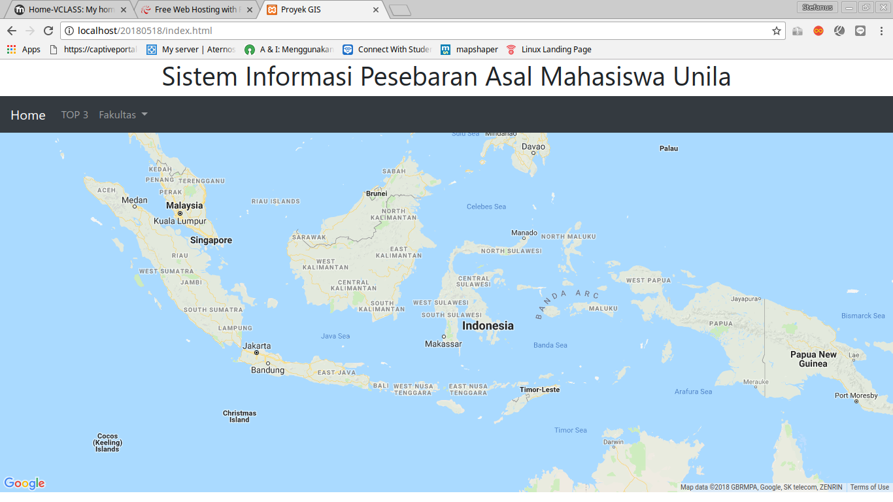
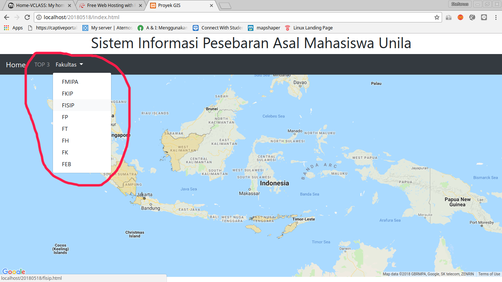

About Us
MyUnila merupakan Sistem Informasi Geografis yang digunakan untuk melihat pesebaran asal mahasiswa Universitas Lampung guna meningkatkan pemerataan mahasiswa serta meningkatkan popularitas Universitas Lampung di Indonesia
Pada Halaman Home akan menampilkan provinsi mana saja mahasiswa Unila berasal beserta jumlah dan informasi berkaitan dengan provinsi yang bersangkutan.
Pesebaran Se-Indonesia
Filtering
Untuk melakukan filtering, anda dapat memilih menu fakultas untuk melakukan filter data berdasarkan fakultas tertentu atau memilih TOP3 untuk memfilter berdasarkan 3 besar provinsi asal mahasiswa
Penampilan data berdasarkan filter